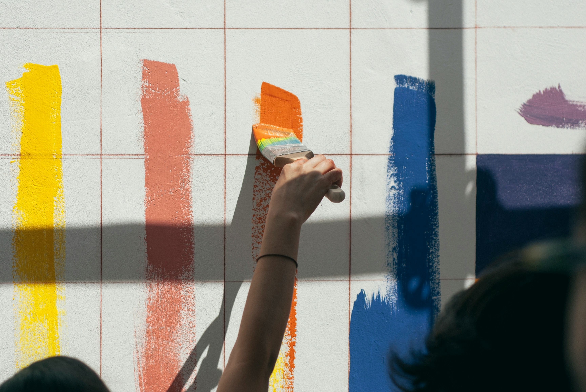

el auge del artivismo urbano en américa latina

el auge del artivismo urbano en américa latina


En los últimos años, las calles de las principales ciudades de América Latina dejaron de ser simples vías de tránsito para convertirse en lienzos de expresión colectiva. El fenómeno del artivismo —la fusión entre arte y activismo social— viene ganando terreno como una herramienta clave para la transformación urbana. Colectivos de artistas jóvenes recorren la región transformando paredes abandonadas en potentes relatos visuales que reflejan la identidad, las luchas y la memoria de los pueblos.
A diferencia del graffiti tradicional o el arte de galería, el muralismo comunitario involucra directamente a los vecinos en el proceso creativo. A través de asambleas y talleres, la propia comunidad decide qué historias quiere contar en sus muros. Diversas investigaciones locales demuestran que estas intervenciones reducen significativamente los índices de vandalismo, mejoran la percepción de seguridad y, fundamentalmente, fortalecen los lazos de empatía y pertenencia entre los habitantes del barrio.
La actualidad de este movimiento también está marcada por la innovación. Por un lado, las redes sociales funcionan como el canal de comunicación interactiva fundamental para que estos proyectos autogestivos consigan financiamiento global. Por el otro, el uso reciente de pinturas ecológicas fotocatalíticas —capaces de absorber gases contaminantes al activarse con la luz solar— está transformando a estos murales en verdaderos pulmones ambientales que purifican el aire de las comunidades más vulnerables.
El artivismo del siglo XXI abraza la ecología. Conocé la ciencia detrás de los murales comunitarios actuales pintados con tecnología fotocatalítica, capaces de purificar el aire y absorber la contaminación urbana mediante el impacto del sol.
Ver más
Un recorrido por el mapa latinoamericano actual. Cómo los colectivos artísticos de nuestra región transformaron el muralismo en una herramienta viva de resistencia cultural, memoria colectiva y sanación social en los barrios populares.
Ver Más
El arte como trinchera no es una moda actual. Desde obras maestras históricas como el Guernica de Picasso hasta las vanguardias del siglo XX, recorremos cómo los artistas siempre usaron el lienzo para denunciar realidades y cambiar el curso de la historia.
Ver más